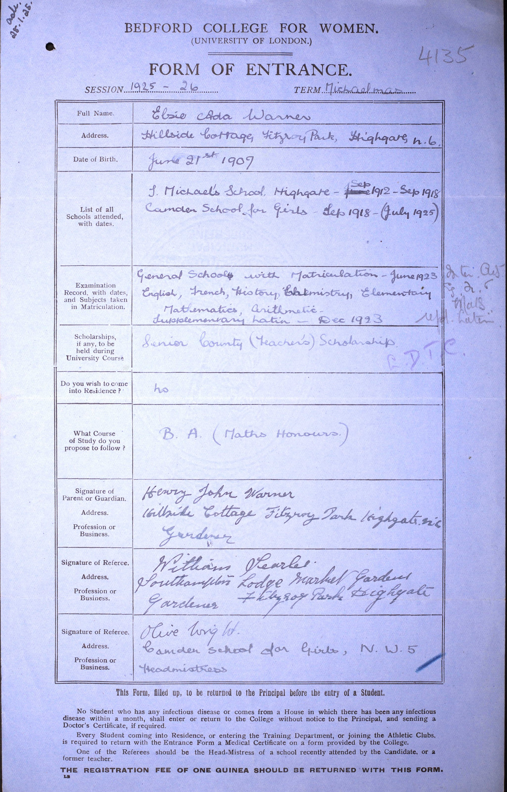
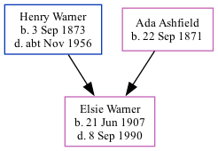

Elsie Ada Warner 1907 - 1990
[ Home ] | [ Calendar ] | [ Surnames Index ] | [ Family History ]A private secretary wine & spirit merchant-ltd and the daughter of Henry Warner (a domestic under gardener) and Ada AshfieldElsie Warner, the second cousin twice-removed on the father's side of Nigel Horne, was born in Margate, Kent, England on Jun 21, 19071,2,3. She went to Bedford College, London, England
Throughout her life, Elsie lived in several places: at Gardeners Lodge, Hillside, Fitzroy Park, Highgate, London on Apr 2, 19115 and on Jun 19, 19211; at 58 Valley Road, Beckenham, Kent, England on Sep 29, 19392 (when she was living with her parents); and at 75 Bromley Road in Beckenham in 1990.
She died on Sep 8, 1990 in Bromley, Kent, England3,4.
Parents
- Henry John was born on Sep 3, 1873
- Ada was born on Sep 22, 1871
Citations
- 1921 Census Of England & Wales - Findmypast (was age 13 and the daughter of the head of the household)
- 1939 Register - Findmypast (was recorded at this address)
- England & Wales deaths 1837-2007 - Findmypast
- England & Wales Government Probate Death Index 1858-2019 - Findmypast
- 1911 Census for England & Wales - Findmypast (was age 3 and the daughter of the head of the household)
Media
Elsie Ada Warner - Bedford College

1939 Register Transcription - TNA-R39-1214-1214H-009-10
England & Wales births 1837-2006 - BMD/B/1907/3/AZ/000620/169
England & Wales deaths 1837-2007 - BMD/D/1990/9/78198289
1911 Census for England & Wales - GBC/1911/RG14/00763/0473/3
1939 Register - TNA/R39/1214/1214H/009/08
England & Wales Government Probate Death Index 1858-2019 - GBOR/GOVPROBATE/C/1990-1990/00215281
1921 Census of England & Wales - GBC/1921/RG15/00806/0481/03
Family Tree
Generated by ged2site. Last updated on Nov 13, 2024